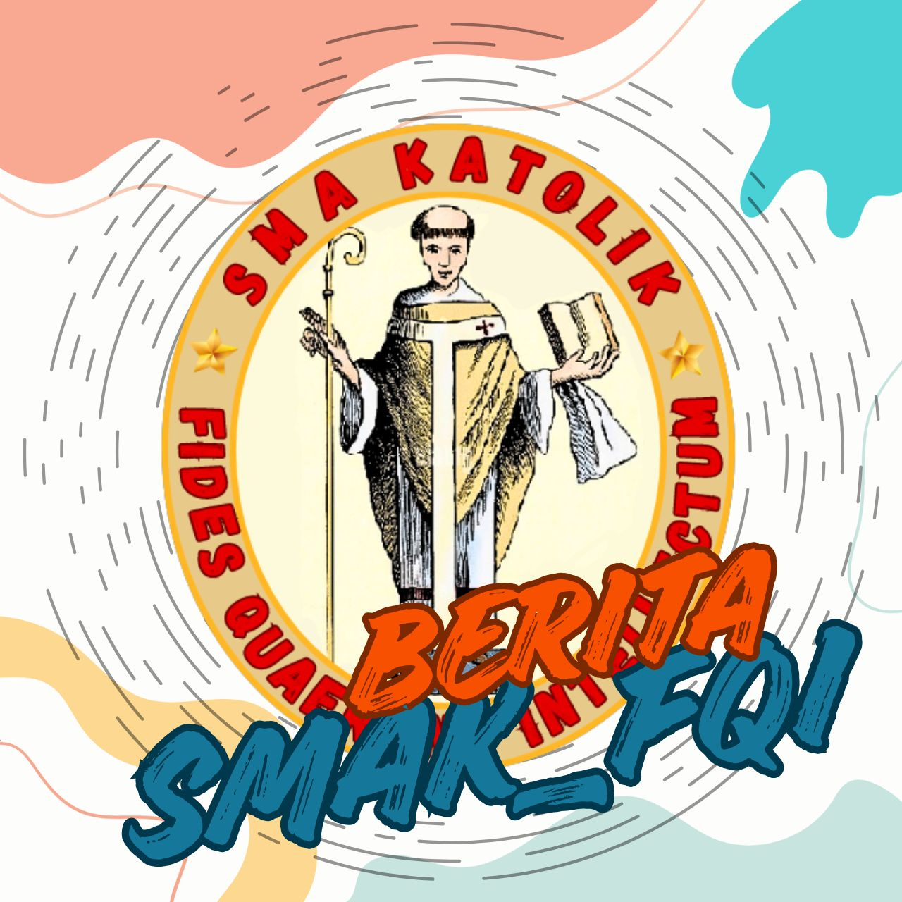

SMA Katolik Fides Quaerens Intellectum merupakan lembaga pendidikan yang berada di bawah naungan Yayasan Betlehen Frankoni Kefamenanu. Sekolah ini memiliki sistem pendidikan berasrama yang mewajibkan seluruh siswa dan siswi untuk tinggal di asrama. Melalui kehidupan berasrama, sekolah berupaya membentuk kedisiplinan, tanggung jawab, serta karakter yang kuat bagi setiap peserta didik. Pembinaan spiritual, moral, dan kehidupan sehari-hari para siswa dibimbing secara langsung oleh para biarawan dan biarawati.
Dalam bidang pengembangan kemampuan akademik dan keterampilan, sekolah juga bekerja sama dengan PT. Indomobil melalui program TeachCast yang bertujuan meningkatkan kemampuan bahasa Inggris para siswa sehingga mereka lebih siap menghadapi tantangan global.
Selain kegiatan belajar mengajar, SMA Katolik Fides Quaerens Intellectum juga aktif menyelenggarakan berbagai kegiatan tahunan yang mendukung pengembangan bakat dan kreativitas siswa. Tiga kegiatan utama yang rutin dilaksanakan setiap tahun adalah Fides Futsal Cup, Pentas Seni, dan Bulan Bahasa. Melalui kegiatan-kegiatan ini, siswa didorong untuk mengembangkan potensi mereka dalam bidang olahraga, seni, serta literasi dan bahasa.
Puji syukur kepada Tuhan Yang Maha Esa atas berkat dan penyertaan-Nya sehingga SMA Katolik Fides Quaerens Intellectum terus bertumbuh sebagai lembaga pendidikan yang berkomitmen membentuk generasi muda yang beriman, berkarakter, dan berpengetahuan.
SMA Katolik Fides Quaerens Intellectum yang berada di bawah naungan Yayasan Betlehen Frankoni Kefamenanu hadir sebagai tempat pembinaan bagi para peserta didik untuk mengembangkan potensi diri secara utuh, baik dalam aspek akademik, spiritual, maupun sosial. Melalui sistem pendidikan berasrama, seluruh siswa dan siswi dibimbing untuk hidup disiplin, mandiri, serta memiliki tanggung jawab yang tinggi dalam kehidupan sehari-hari. Proses pembinaan ini didampingi secara langsung oleh para biarawan dan biarawati yang dengan penuh dedikasi menanamkan nilai-nilai iman, moral, dan karakter.
Selain fokus pada pembentukan karakter, sekolah juga terus berupaya meningkatkan kualitas pembelajaran. Salah satu langkah yang dilakukan adalah menjalin kerja sama dengan PT. Indomobil melalui program TeachCast, yang bertujuan untuk membantu para siswa mengembangkan kemampuan bahasa Inggris mereka agar siap menghadapi tantangan di era global.
Kami juga memberikan ruang bagi siswa untuk menyalurkan bakat dan kreativitas melalui berbagai kegiatan tahunan seperti Fides Futsal Cup, Pentas Seni, dan Bulan Bahasa. Kegiatan-kegiatan ini menjadi sarana bagi para siswa untuk mengembangkan potensi di bidang olahraga, seni, serta kemampuan literasi dan bahasa.
Kami berharap melalui pendidikan yang holistik ini, SMA Katolik Fides Quaerens Intellectum dapat melahirkan generasi muda yang tidak hanya cerdas secara intelektual, tetapi juga memiliki iman yang kuat, karakter yang tangguh, serta kepedulian terhadap sesama.
Akhir kata, kami mengucapkan terima kasih kepada seluruh pihak yang telah mendukung perkembangan sekolah ini. Semoga SMA Katolik Fides Quaerens Intellectum terus menjadi tempat pembinaan yang melahirkan generasi masa depan yang unggul dan berintegritas.
Kepala Sekolah
fr. Athanasius Edianus Ndarung, OFMConv
Siswa
Guru
Ruang Kelas
Alumni
Pendaftaran siswa baru tahun ajaran 2026/2027 telah dibuka. Silakan melakukan pendaftaran melalui link berikut.
Daftar SekarangSiswa aktif dalam kegiatan akademik dan ekstrakurikuler.
Sekolah meraih berbagai prestasi tingkat daerah.

Pendaftaran siswa baru tahun ajaran 2026/2027 telah dibuka. Calon siswa dapat melakukan pendaftaran secara online.
Baca SelengkapnyaSMA Katolik Fides Quaerens Intellectum menjadikan Bulan Bahasa sebagai salah satu ruang untuk meningkatkan nasionalisme dan rasa cinta tanah air siswa-siswi.
Baca SelengkapnyaRachel menerangkan bahwa, kelebihan belajar Bahasa Inggris dari program TeachCast ini adalah, pembelajaran dilaksanakan secara online menggunakan satelit Telkom Satu sebagai pemancar ke luar negeri, Pengajar dari University of Wyoming di Amerika, Pembelajaran berupa dialog interaktif secara langsung bersama pengajar, Standar materi pembelajaran dengan lisensi dari Oxford University.
Baca Selengkapnya